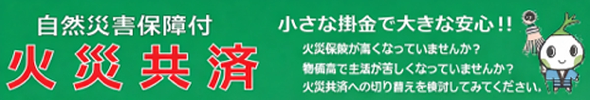
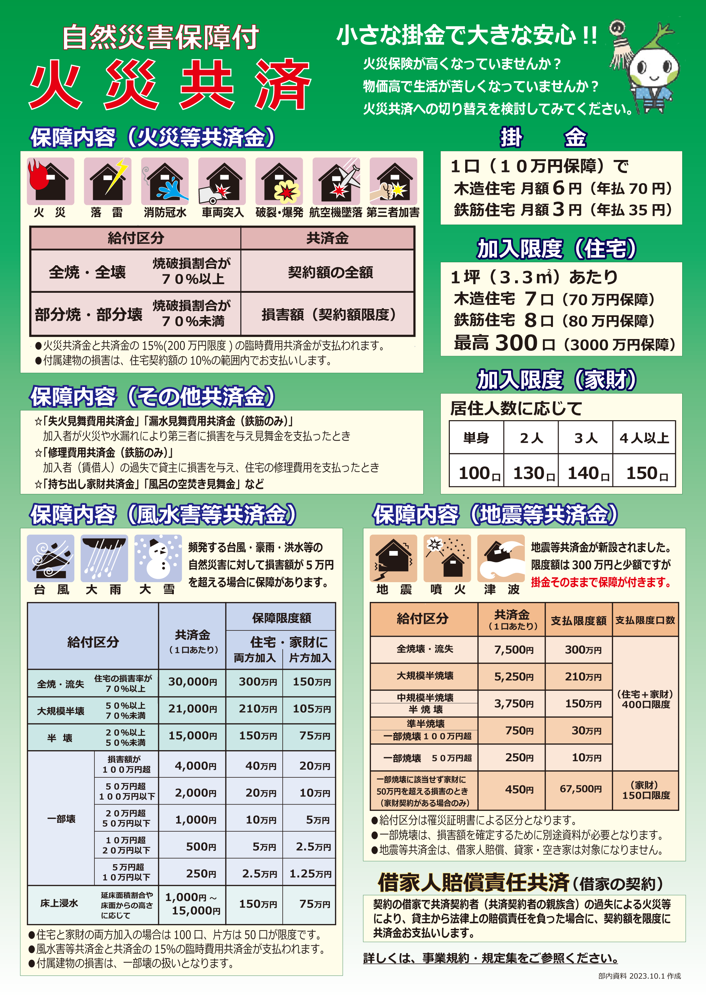
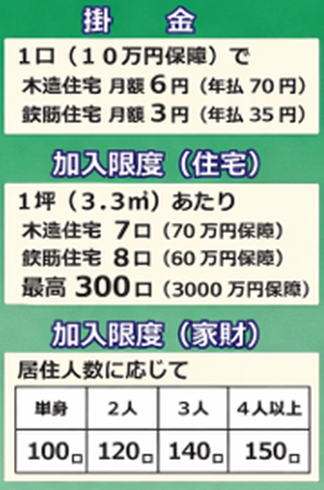
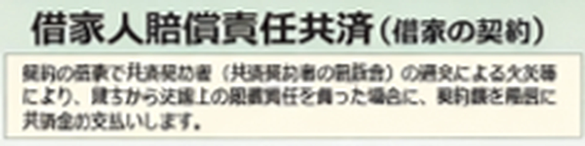
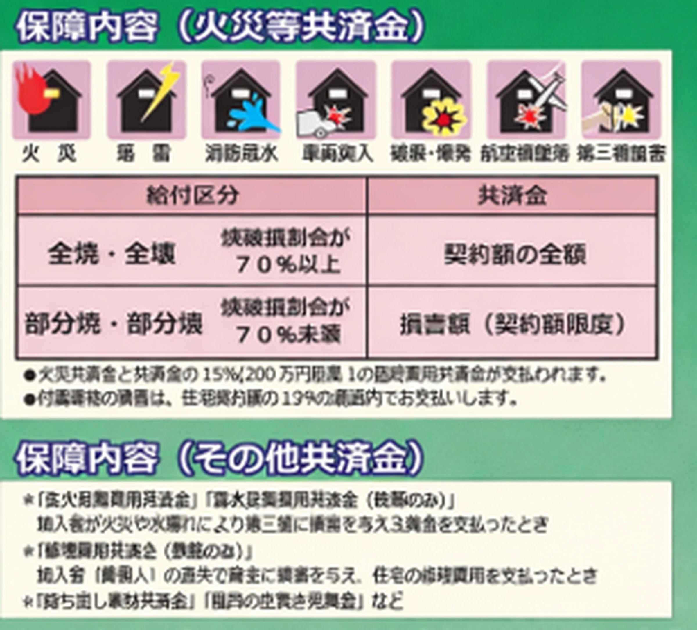
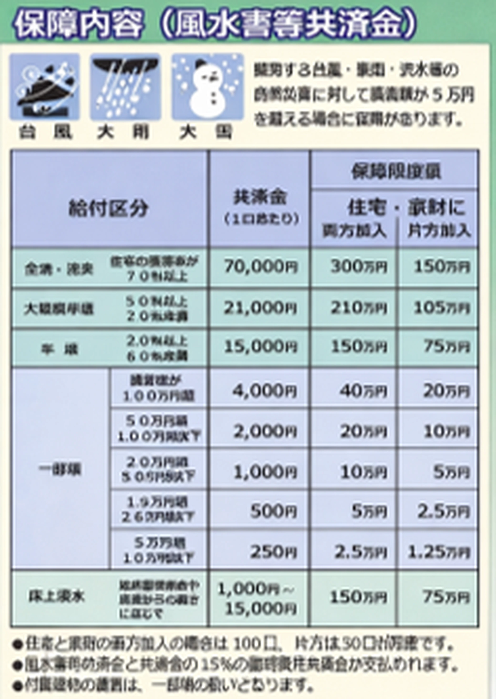
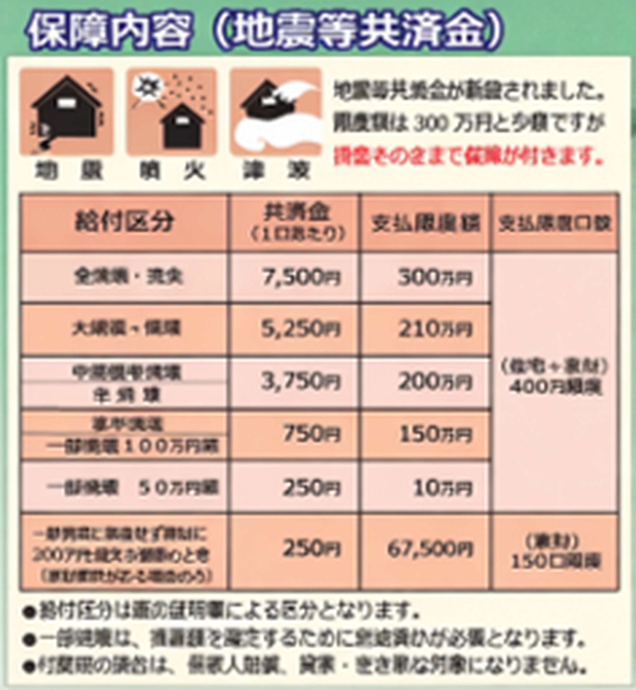

火災共済の保障内容、掛金、加入限度、風水害等共済金、地震等共済金、 借家人賠償責任共済についてご案内します。
詳しい制度内容や加入条件については、募集規約・規定集もあわせてご確認ください。
火災共済制度のご案内

掛金・加入限度


保障内容（火災等共済金）

保障内容（風水害等共済金）

保障内容（地震等共済金）

制度のご確認について
- 保障内容や給付条件の詳細は、募集規約・規定集をご確認ください。
- 掲載内容は概要です。実際の加入にあたっては所定の条件があります。
- ご不明な点はお問い合わせページからご連絡ください。